To whom it may concern.
You asked how I work with AI. Below are answers to your questions. Each answer has a Source link to the case study with more details.
Abstract
Short answers to the questions you asked. Each link jumps to the matching part of the case study.
Walk me through how AI has fundamentally changed your design workflow?
Before AI I spent the week on notes, drawings, and Figma. Nobody could click a real screen at the end.
Claude and Cursor now make those screens. I spend time on the problem, the rules, whether people can use it, and whether it is worth building.
Same morning the team can look at the steps. Same week people can click a real screen that engineers can build from.
Source: What used to take days
Give me some examples of AI-driven products you have worked on?
Command Center is a work screen I designed at OLG, a big lottery company in North America.
People use it at work now. Call time dropped by more than half. It is not a chat bot.
The employee can click the number and open the real bill. They do not hunt through four programs.
The AI can write a letter. It cannot send it. The employee presses Approve.
If they Approve without reading, the design failed.
Source: The lottery bill screen
Tell me about a project where you used agentic AI from problem statement to working prototype.
A store owner called. Why is March $4,382 higher? The employee had four programs open. The call took about eight minutes. A customer was waiting.
I put the real notes, how those four programs work today, and one page of rules into Cursor. I did not draw the app in Figma first.
The first thing it built was a chat bot. Wrong. The employee needs one work screen on the phone, with chat on the side.
I kept saying no to chat windows. A week later Command Center was a screen you can click. People use it at work now.
Source: The chatbot I threw out
Which AI tools are you using today, and what do you use each for?
Claude reads the files and helps me think. Cursor Plan writes a plan I can say no to.
Cursor Agent builds the screens after I say yes. Figma holds the colors, type, and layout.
Later I polish the look in Figma and send it back to Cursor. Engineers get a working screen, not Figma frames to inspect.
Source: What each tool is for
Give me a specific example where AI reduced your design cycle time. What was the before-and-after?
Before: days to draw how the job works today vs how it should work. Still nothing to click. Each extra product was weeks in Figma.
After: same morning a map of the steps. Next day a screen in code I can test with people.
Source: What used to take days
Tell me about a design system you've built and how you would structure it so AI can reliably use it?
I have made a set of named colors and parts. For this work I named them so Cursor could follow, plus rules for what not to do.
Same name in Figma and in code. If the AI has to guess the look, the names and rules are not ready.
Source: How I wrote the design system
How do you validate AI-assisted designs with real customers?
Same test as any product. Give lottery staff a real job and watch. Explain why March is $4,382 more. Fix three lottery tickets that are wrong. Press Approve.
Watch if they read where the number came from, or click Approve without reading. We tested with staff. Not with store owners.
Source: How we tested it
Tell me about a time you introduced an AI tool or workflow to other designers. What changed?
I have not run a class. I sit with designers on a real job. I pick a boring repeated task, show a working screen, and we decide together if AI belongs there.
Source: Pairing, not a lunch-and-learn
If you joined my client tomorrow, what would you look at first to determine where AI could compress their design process?
I would not start with a tool. I would start with the business: what is broken, which number is stuck, and what hurts the people doing the job.
Then I put that, plus the real files, into Claude. Then we build something you can click and test. I would not start by adding a chat bot.
Source: What I would look at first
Staff had four programs open to explain a $4,382 bill. I used AI to make one screen instead.
Lottery stores get a bill. One bill jumped by $4,382. The owner called. The employee had to hunt across four programs while a customer waited at the store.
I spent a week building one screen for that employee. People use it at work now. Call time dropped by more than half.
The AI can write a letter or a ticket fix. It cannot send the letter or change the tickets. The employee presses Approve.
I used AI to build faster. I did not let it make up a source or turn the product into a chat bot.
Who’s who
| Person | What they do |
|---|---|
| Store owner | Sells lottery tickets. Calls about the bill. They are on the phone, not on this screen. |
| Customer at the store | Waiting to buy a ticket. |
| Lottery employee | Answers the call. Looks up the bill. Presses Approve. Command Center is their screen. |
| Me | Designed Command Center. Set what the AI may not do. People use it at work now. |
The store owner called. The bill was $4,382 too high.
“Why is March higher?”
A store owner is on the phone with the lottery company. A customer is waiting at their counter. If this takes eight minutes, that customer leaves.
The lottery employee used to open four programs to answer: bill, tickets, reports, help desk. They do not show the same numbers.
March is up $4,382. Stores also sell sports tickets. That extra line is what made the bill jump. Nobody could say that on the phone without switching programs.
A new app would have been a fifth program to open on the call. This week I built one screen for the employee instead. People use it at work now. Call time dropped by more than half.
Command Center is one screen for the employee on the call.
Work is on the left. Chat is on the right. Chat helps. It is not the product.
The store owner asks why March is higher. The employee needs a sentence they can read back. Sports ticket RL-45218. $4,382. It came from the bill program.
They click that source and open the real bill. If they cannot click it, they go back to the four programs.
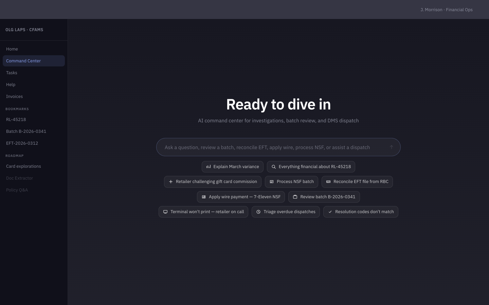
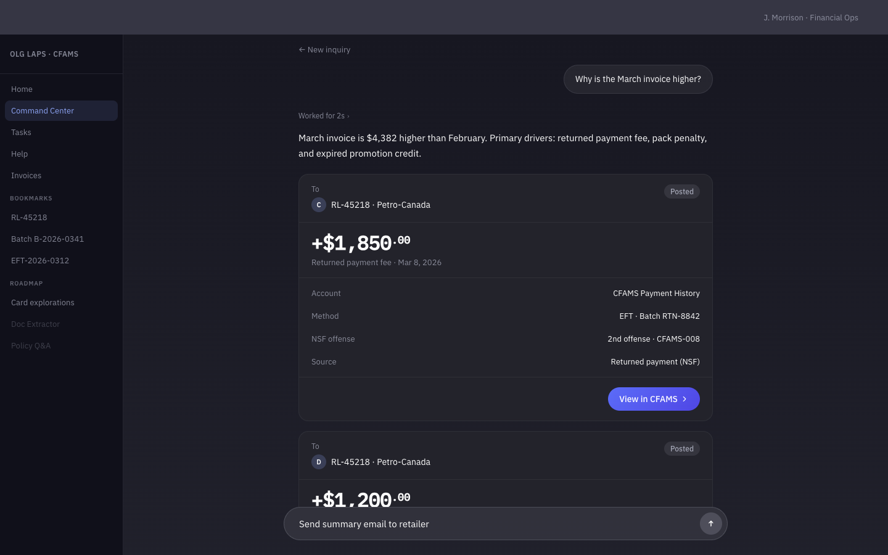
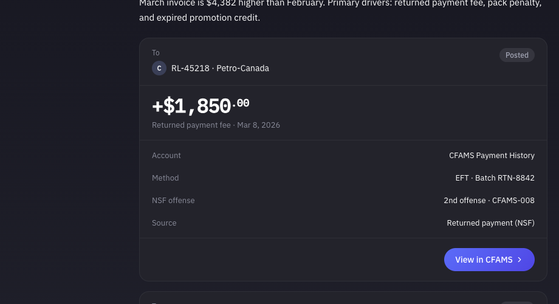
The letter and tickets do not change until the employee presses Approve.
The AI can write a letter or a ticket fix. It cannot send the letter or change the tickets. Approve is a button only a person can press.
A store payment fails. The bank said no. The lottery company has to tell the store. The AI can write that letter.
The letter stays on Hold. The employee reads it, edits if needed, then presses Approve. Until then the store never sees it.
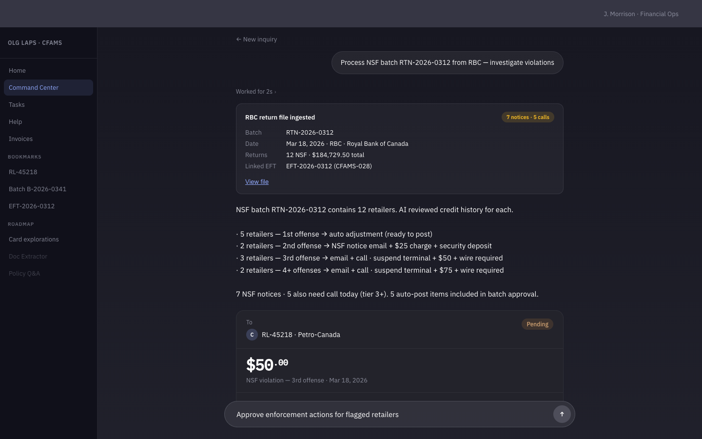
Example: a list of tickets is wrong. The AI can line up the fixes. Same rule. The employee checks the list, then presses Approve. The tickets do not change until that click.
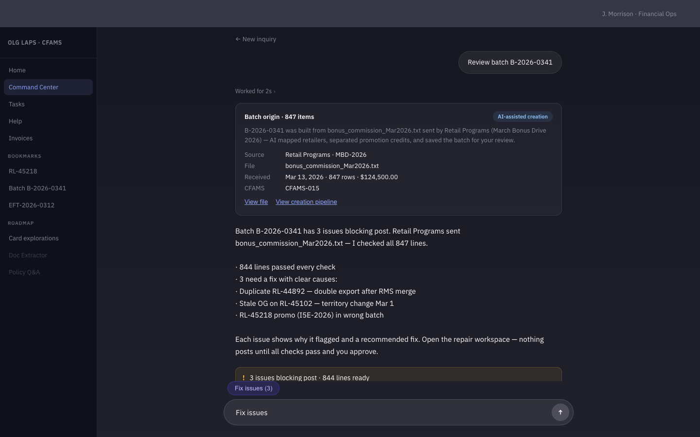
If the employee presses Approve without reading, the design failed. Even if the number was right.
Staff already said they do not want another login.
Before any screens, staff wrote what hurts on a board. The job was already four programs and a phone call. I did not start by drawing a new app in Figma.
They do not want another login. They want the four programs they already have to stop showing different numbers.
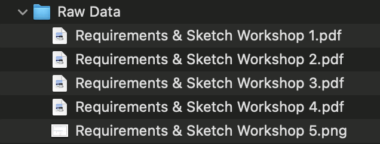
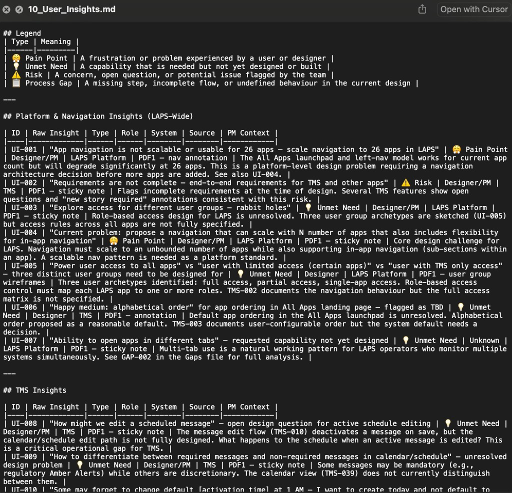
After that I wrote one page: who gets hurt if the AI is wrong, what it may do, what it must never do, who presses Approve.
Cursor did not start building until that page existed.
I loaded the real files before I asked for screens.
A blank chat that says “design a lottery tool” makes one up. I loaded the real files first: notes, the four programs they already use, and a list of things the AI must not do.
Bill. Tickets. Reports. Help desk. Those already exist. The new screen has to work with them, not replace them.
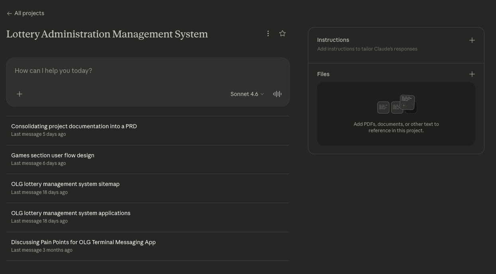
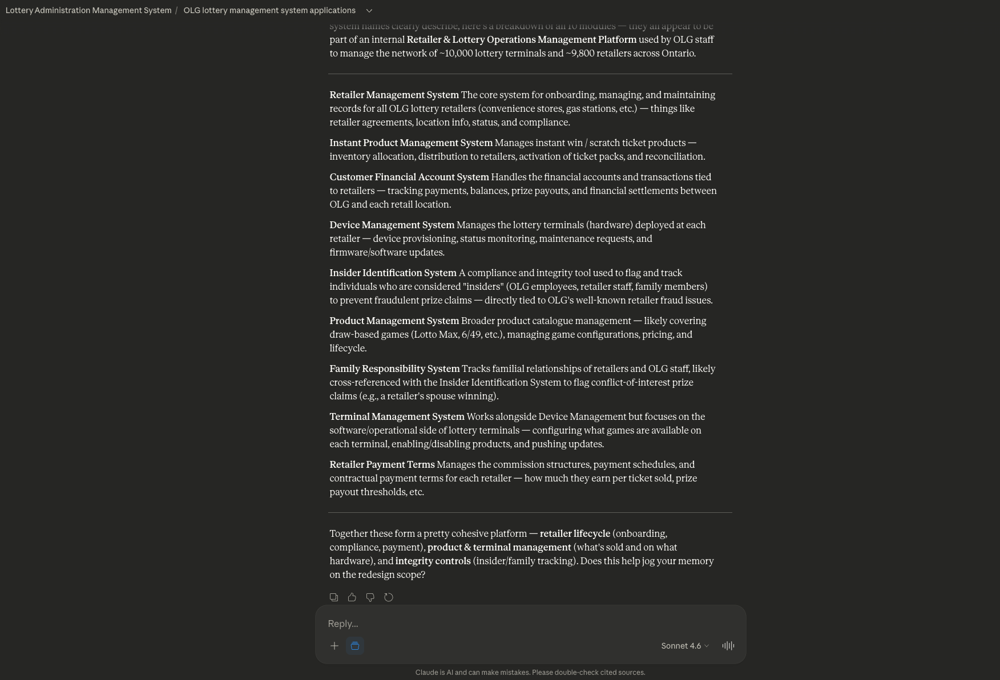
I used Claude to map the steps of the job.
I still do not jump to a clickable screen. I need how the job works today, and how it should work. Workshop notes went into Claude. The steps went onto a FigJam board the same morning.
That used to take days. The team can say no to a direction the same morning.
This board is Instant Products, a games list, not the $4,382 bill. It shows the method. That afternoon Cursor started building.
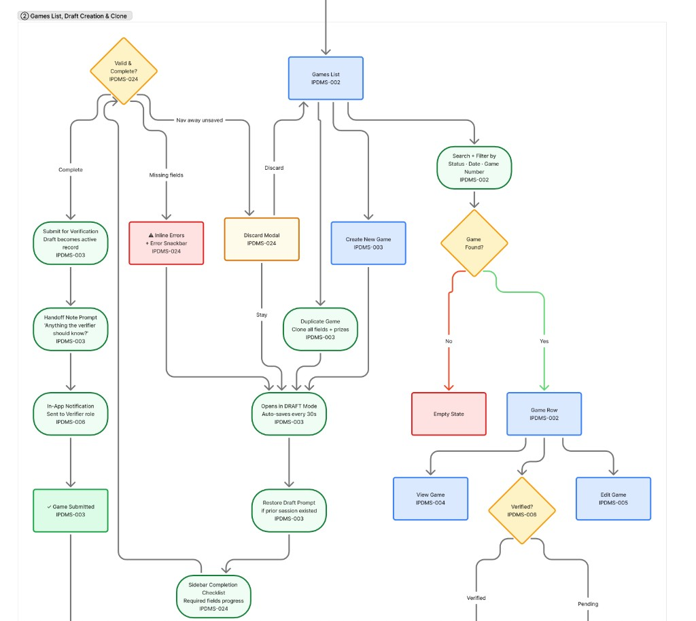
The first pass was a chat bot. I threw it out.
That afternoon I pointed Cursor at the notes and the steps. Cursor made the screens. I reviewed them. The first Command Center was a chat bot with extra buttons.
Easy to send out by mistake. I said no. Five pages only. A sixth page meant the AI was making one up.
| Section | What the employee does |
|---|---|
| Command | Home. See today’s work. |
| Ingest | Bring in the bills and tickets. |
| Exceptions | Check things that look wrong. |
| NSF | A store’s payment did not go through. |
| Batch | Fix a list of tickets at once. |
Chat stays on the side. Approve stays a person. Cursor made the screens. I threw out the chat bot.
What each tool is for
Each tool has one job. Claude thinks. Cursor Plan is a plan I can say no to. Cursor Agent builds after I say yes. Figma holds the look.
| Tool | What I use it for | What I never let it do |
|---|---|---|
| Claude | Read the files. Help me think | Make screens |
| Cursor Plan | Write a plan I can say no to | Start building |
| Cursor Agent | Build what I already said yes to | Add a page I did not ask for |
| Figma | The look: colors, type, layout | Make up a look the code does not have |
I do not use any of these to talk to people. They cannot send a letter or change a ticket. Only the employee presses Approve.
I sit next to people. I do not run a class.
I have not run a class. I show this by sitting next to someone on a real job.
We look at a screen you can click, not a Figma drawing. The question is: can the employee do the job? Not: should this box move one pixel.
I wrote names and rules so Cursor would not guess.
A designer can look at a blue and remember: that is for the main button. An AI cannot remember that. It needs the name written down, and a rule for when not to use it.
If I only write “use a blue button,” the AI guesses which blue. Then the design comes out the wrong color.
This week I wrote those names. Same word in Figma and in code. Cursor builds the page from small parts. I do not hand it a finished drawing.
Color names first. Each name says when to use it, and when not to.
{
"color.text.ai": {
"value": "{primitive.blue.400}",
"layer": "token",
"intent": "AI is speaking",
"useFor": ["Command thread", "AI kicker"],
"avoidFor": ["primary button", "links", "success"]
},
"color.background.hold": {
"value": "{primitive.amber.950}",
"layer": "token",
"intent": "money or a ticket is waiting on a person",
"useFor": ["Hold badge", "NSF letter"],
"avoidFor": ["success", "decoration"]
},
"color.action.primary": {
"value": "{primitive.indigo.500}",
"layer": "token",
"intent": "the main button",
"useFor": ["Approve", "Create"],
"avoidFor": ["AI chrome", "delete"]
}
}If a button uses a raw color code instead of a name, the naming failed.
Next, a button. Figma and code use the same word for each setting.
// button.content.ts (contract before TSX)
export const buttonContent = {
layer: "atom",
intent: "a person takes an action",
figma: "Button/{primary|secondary|ghost|danger}",
builtFrom: ["tokens"],
props: {
variant: ["primary", "secondary", "ghost", "danger"],
disabled: [false, true],
loading: [false, true]
},
tokens: [
"color.action.primary",
"color.text.on-accent"
],
codeExample: 'import { Button } from "@olg/ui"',
a11y: "name the action. Approve, not Submit."
};
// Figma says disabled. Code says disabled. Not isDisabled.
type ButtonProps = {
variant: "primary" | "secondary" | "ghost" | "danger";
disabled?: boolean;
loading?: boolean;
children: React.ReactNode;
};
Same word. disabled, not isDisabled.
Then a small card for the bill. Cursor uses cards like this to build the page. It does not invent a new page.
// record-card.content.ts (molecule)
export const recordCardContent = {
layer: "molecule",
intent: "show the record the AI used, and make it clickable",
builtFrom: ["tokens", "Text", "Badge", "Button"],
do: [
"always show system name and id",
"click opens the real record"
],
dont: [
"invent a source",
"show a total with no citation"
]
};Then a short rules file for Cursor. Use the parts that exist. Do not draw a new button. Do not make up a sixth page.
# AGENTS.md
You compose pages from @olg/ui.
You do not invent chrome.
- Import atoms and molecules. Never redraw a Button.
- Tokens first, then atoms, then molecules, then the page.
- Figma property names ARE the props. Do not rename.
- No raw hex. No new dialog if one exists.
- No sixth menu name.
- Command Center is a page, not a new chat kit.
- Chat stays on the side. Approve is a person.
Fail:
import { Button } from "@olg/ui" missing
color: "#6b86ef" in a component
<div className="chat-app"> instead of Command page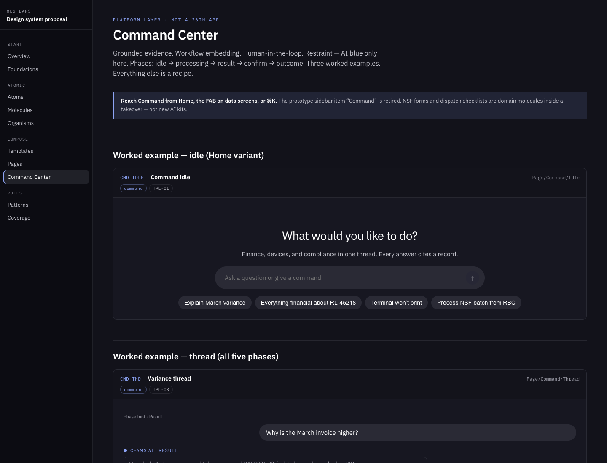
Last, a short list for Command Center. So a later pass cannot turn it back into a chat bot.
# command-center.page.yaml
layer: page
builtFrom:
- tokens
- Button
- RecordCard
- HoldBadge
do:
- cite the source and make it clickable
- keep chat on the side
- Approve is a person
dont:
- invent a sixth menu name
- invent a new dialog when one exists
- pair hold-amber with success
- use AI blue on a primary button
- do anything without ApproveWe tested it as a live call.
I ran the call myself first. Then lottery staff used the clickable screen. We did not test with store owners.
Same test as any product: a real job, watch them do it. Explain why March is $4,382 more. Fix three lottery tickets that are wrong. Press Approve.
“It went fine” is not a result. Can they read the source to the store owner? Can they refuse Approve? Watch if they Approve without reading. That is a failed AI moment, not a fast one.
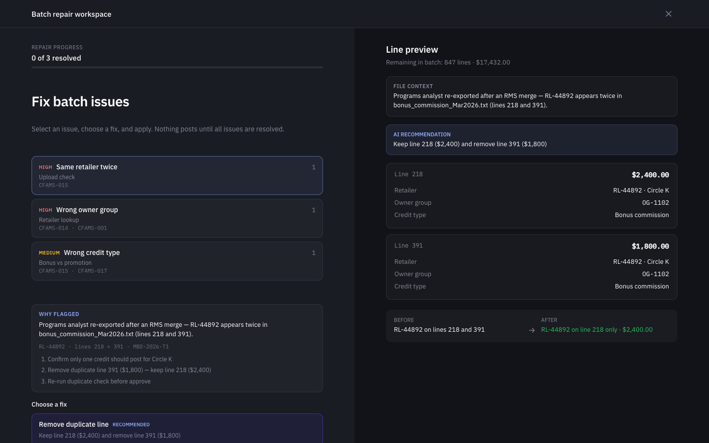
The drawing week got shorter. The hard thinking did not.
Drawing how the job works today vs how it should work used to take days, with nothing to click. Workshop notes now go into Claude. The steps land in FigJam the same morning.
Cursor can make a screen that afternoon. Same morning the team can look at a direction. Same week staff can try it.
Nine other products existed only as Word docs. Only finance had a working screen. Before AI, each extra product was weeks in Figma.
I gave Cursor the finance screen plus those docs. Same week: named parts other products could reuse. We could still show the live finance screen.
Naming the problem did not get faster. Writing the rules did not get faster.
The employee still has to read before they Approve. That step should not get faster.
If I joined a team tomorrow, I would not start with a chat bot. I would start with the business: what is broken, which number is stuck, and what hurts the people doing the job. I would put that, plus the real files, into Claude.
Then I would look for the slow step in the design week, and whether names are clear enough for an AI to follow.